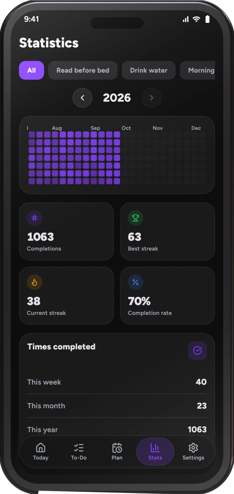
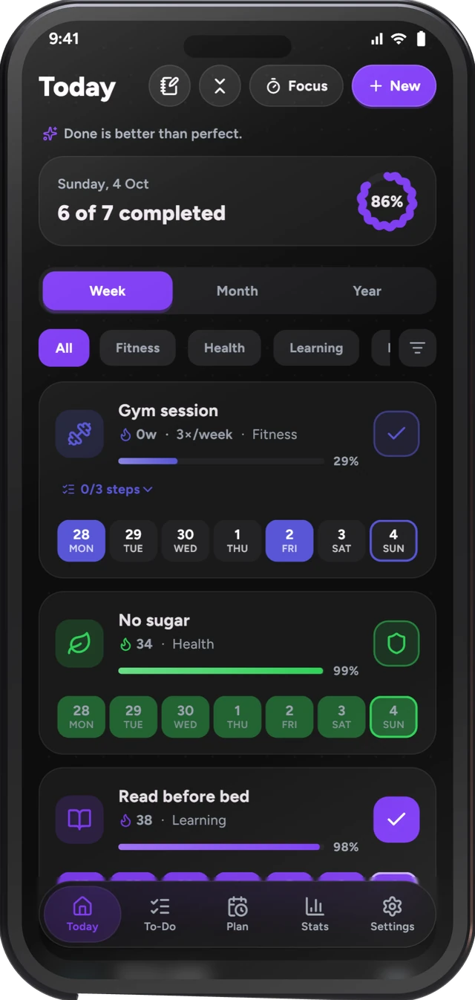
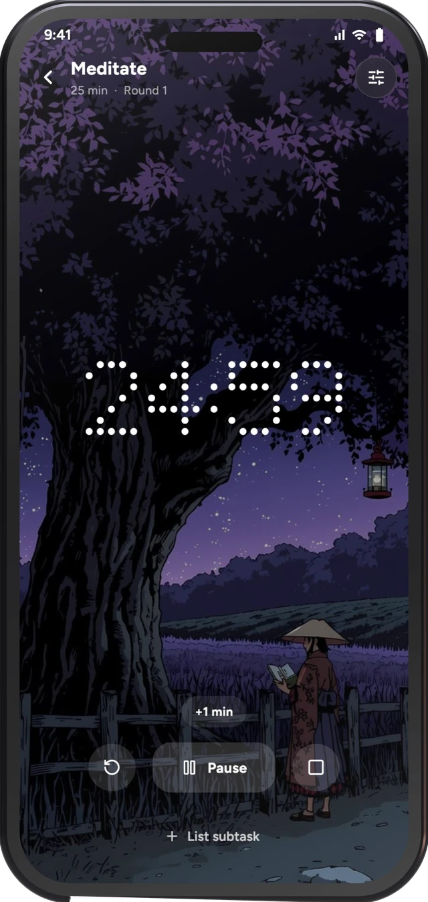

One tap a day.Un toque al día. Watch the year fill in.Mira cómo se llena el año.
A habit tracker that keeps quiet. No account, no ads, and no internet permission on mobile. Your habits stay on your device. Un registro de hábitos que no da la lata. Sin cuenta, sin anuncios y sin permiso de internet. Tus hábitos se quedan en tu dispositivo.



What it doesQué hace
-
One tapUn toque
Mark a habit from the list, a home-screen widget or the reminder itself.Marca un hábito desde la lista, un widget o el propio recordatorio.
-
More than yes or noMás que sí o no
Count glasses or pages, split a habit into steps, or track one you want to quit.Cuenta vasos o páginas, divide un hábito en pasos o sigue uno que quieras dejar.
-
Focus timerTemporizador Focus
Pomodoro rounds, three clocks, scenes and soothing sounds. Minutes count toward the habit.Rondas Pomodoro, tres relojes, escenas y sonidos. Los minutos suman al hábito.
-
The whole yearEl año entero
Streaks, a month calendar, a year grid and statistics that read at a glance.Rachas, calendario del mes, la rejilla del año y estadísticas que se leen de un vistazo.
-
Notes on any dayNotas en cualquier día
Write what happened, plan ahead or add a photo. It shows as a dot on the calendar.Escribe lo que pasó, planifica o añade una foto. Sale como un punto en el calendario.
-
Three stylesTres estilos
Classic, Minimal or Express. The same habits, dressed the way you like.Clásico, Minimal o Express. Los mismos hábitos, a tu gusto.
A look insidePor dentro
Scroll sideways, tap to zoomDesliza de lado, toca para ampliar
No account. No internet. No ads.Sin cuenta. Sin internet. Sin anuncios.
Habit Tracker M3E does not ask for the internet permission on mobile, so nothing can leave your phone. Back up to a folder you choose, and if you want your habits on multiple devices, sync that folder yourself with Syncthing, Google Drive or local storage.Habit Tracker M3E no pide permiso de internet en móviles, así que nada puede salir de tu dispositivo. Haz copias en la carpeta que elijas y sincronízala tú mismo sin intermediarios.
DownloadDescargar
Made by one person.
Free for everyone.
Hecho por una sola persona.
Gratis para todos.
No company, no investors, no ads, and no premium lockouts. I maintain and enhance Habit Tracker M3E in my free time and keep it 100% free so anyone can use it. If it helps you keep your habits, starring the project or buying a coffee helps keep it going! Sin empresa, sin inversores, sin anuncios y sin versiones de pago. Mantengo Habit Tracker M3E en mi tiempo libre y lo ofrezco 100% gratis. Si te ayuda en tus hábitos, dar una estrella o compartirlo ayuda mucho.